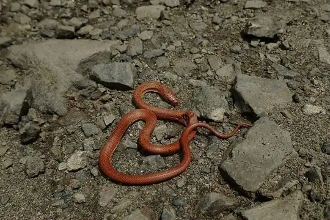
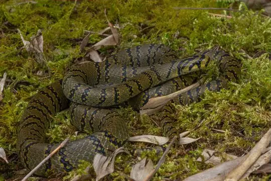

Euprepiophis
The genus Euprepiophis (family Colubridae) has 3 species in SnakeList (none venomous), recorded in 9 countries.
- 3species
- 3non-venomous
- 9countries
Species
Showing 3 species

Japanese WoodsnakeEuprepiophis conspicillata Mandarin RatsnakeEuprepiophis mandarinus
Mandarin RatsnakeEuprepiophis mandarinus
Szechwan Rat SnakeEuprepiophis perlaceus
No snakes in Euprepiophis match.
About the genus Euprepiophis
- Family: Colubridae.
- Recorded in: China, India, Japan, Laos, Myanmar, Russia, Southern Kuril Islands, Taiwan, Vietnam.